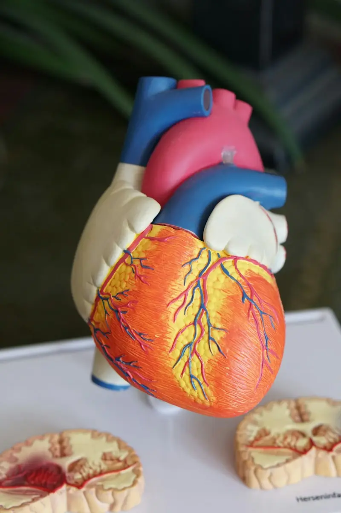
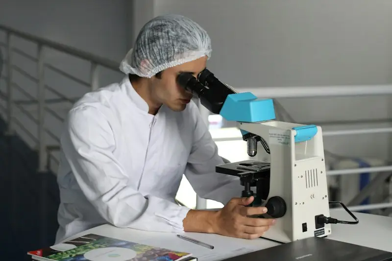
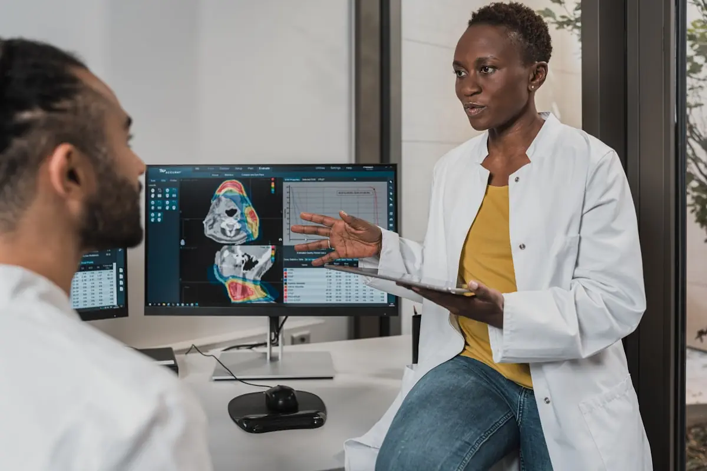

Clínica Médica
Consultas para avaliação, diagnóstico e tratamento, com orientação clara sobre cada passo do cuidado.
Clínica Dias, Timóteo - MG
Consultas de clínica médica, check-ups, exames, hematologia, prevenção e acompanhamento contínuo, com atendimento próximo e respeitoso.

Como podemos ajudar
Atendimento completo para cuidar da sua saúde com prevenção, diagnóstico e acompanhamento.
Consultas para avaliação, diagnóstico e tratamento, com orientação clara sobre cada passo do cuidado.

Avaliações periódicas para acompanhar sua saúde e identificar precocemente qualquer alteração.

Solicitação e acompanhamento de exames, com resultados disponíveis online de forma prática.

Investigação e acompanhamento de alterações do sangue com atenção especializada.

Orientação e cuidados preventivos para manter a qualidade de vida em todas as idades.

Seguimento próximo de tratamentos e condições crônicas, com escuta e cuidado individualizado.

Por que escolher a Clínica Dias
Escuta atenta e explicações claras para você entender e participar do seu cuidado.
Protocolos e cuidados que priorizam o bem-estar e a privacidade de cada paciente.
Agendamento por telefone e resultados de exames disponíveis online, quando e onde você precisar.
Venha nos visitar
Rua Cento e Vinte e Oito, 14 - Santa Maria, Timóteo - MG, 35180-002
Segunda a sexta-feira, das 8h às 18h
